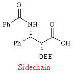
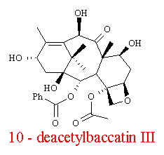
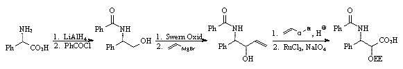
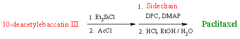

Semi Synthesis of Taxol
| The initial studies (1977-1980) showed the best source of Paclitaxel to be the bark of the yew tree. However, in 1988 it was discovered that a semi synthetic version of the drug could be made from a substance extracted from the needles and stems instead of the bark.(1) This substance is 10-deacetylbaccatin III. This compound has a strong resemblance to the 4-cyclic core of Paclitaxel and can be transformed by using a short synthetic sequence. The full reaction scheme is given below; it involves the attachment of the Taxol side chain to the baccatin core. The side chain can be synthesised in the lab but very specific strategies have to be used if the final drug is to be biologically active. | 
This molecule is very similar |

Synthesis of Sidechain (one possible method)

Semi synthesis of Paclitaxel from 10-deacetylbaccatin III
The main advantage of this semisynthetic version of Taxol, is that 10-deacetylbaccatin III is harvested from a renewable resource. Removal of a percentage of it’s needles does not harm the yew tree and they are soon replaced. The sustainable harvesting of needles obviously makes more sense than the destruction of the tree. This semisynthetic form of the drug is presently undergoing clinical evaluation prior to consideration for approval by the FDA.(7)
 Next
Page: Docetaxel
- the new Taxoid
Next
Page: Docetaxel
- the new Taxoid